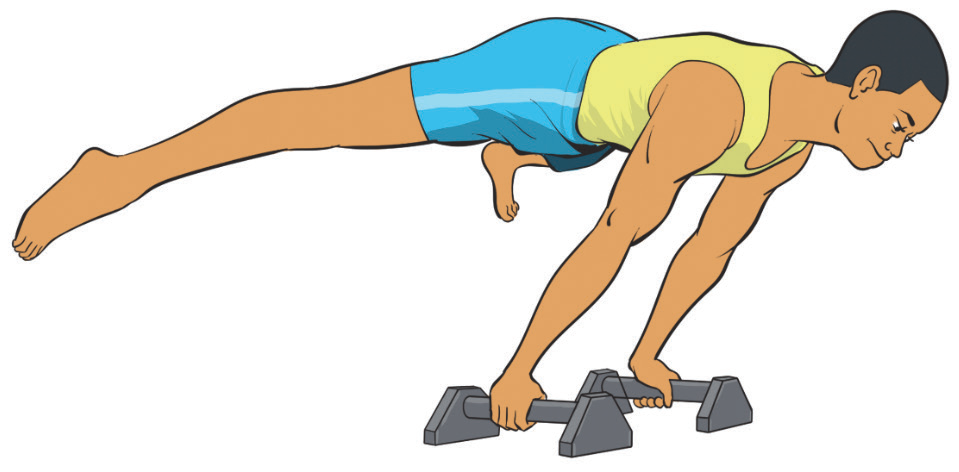

Figure 4.13: Straddle planche
Activity 4.13
Search from internet and other sources on how to execute a straddle planche hold and practice it.
Split press to handstand
A split press to handstand is a skill where a gymnast lifts into a handstand from a split position on the floor without using momentum.
It requires flexibility, core strength, and controlled balance and is commonly used in floor, beam, and parallel bar routines.
The following steps will help you practice split press handstand:
- (i) Sit on the floor in a front split (one leg forward, one leg back);
- (ii) Place hands on the floor positioning them near the front leg for support;
- (iii) Engage core and push through arms activating your core, shoulders, and arms to begin lifting;
- (iv) Lift hips and rear leg first followed by the front leg;
- (v) Press into a controlled handstand slowly bringing both legs together overhead while maintaining balance; and
- (vi) Hold the handstand keeping core tight, arms straight, and body aligned, Figure 4.14.